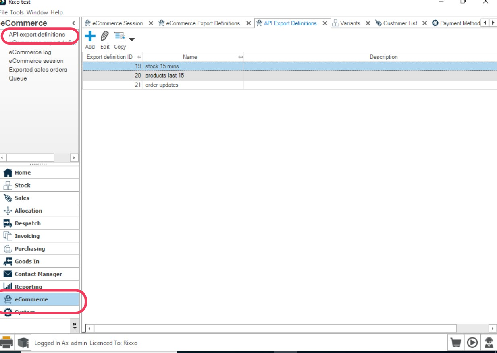
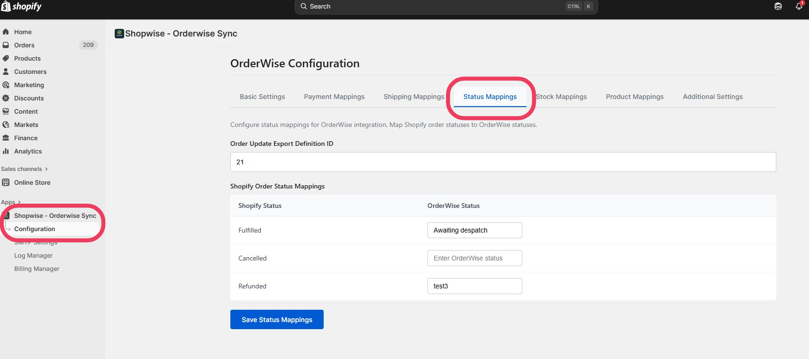

Order Status Mapping
Order Status Mapping synchronizes order statuses between OrderWise and Shopify. This allows Shopify orders to update to reflect their current status in OrderWise (Fulfilled, Cancelled, or Refunded).
How Status Mapping Works
- OrderWise Statuses → Shopify Statuses
- Supported Shopify Statuses: Fulfilled, Cancelled, Refunded
- Automatic Updates: ShopWise checks OrderWise every 15 minutes for status changes
- Bidirectional Sync: Status changes in OrderWise update Shopify orders
Prerequisites
Before setting up status mapping, you need to create an OrderWise API Export Definition.
Step 1: Create OrderWise API Export Definition
- Open OrderWise
- Click E-Commerce (bottom-left menu)
- Click API Export Definitions (top-left menu)

- Click Add
- Give it a clear name, e.g., ShopWise Status Sync

- In the SQL Statement box, paste the following:
WITH DateCheck AS (
SELECT DATEADD(HOUR, -1, GETDATE()) AS DateOneHourAgo
)
SELECT
order_header.oh_order_number AS orderID,
order_status.os_description AS orderStatus,
delivery_header.dh_consignment_number AS trackNumber,
cod_tracking_url_prefix + dh_consignment_number + cod_tracking_url_suffix AS trackingLink,
order_header.oh_id AS orderNumber,
order_header.oh_cust_order_ref AS orderReference,
delivery_header.dh_datetime AS dateShipped
FROM order_header
LEFT JOIN order_status ON order_header.oh_os_id = order_status.os_id
LEFT JOIN delivery_header ON delivery_header.dh_oh_id = order_header.oh_id
LEFT JOIN order_header_detail ON order_header.oh_id = order_header_detail.ohd_oh_id
LEFT JOIN delivery_method ON delivery_method.dm_id = order_header_detail.ohd_dm_id
LEFT JOIN courier_detail ON courier_detail.cod_id = delivery_method.dm_cod_id
CROSS JOIN DateCheck
WHERE oh_datetime >= DateCheck.DateOneHourAgo
OR ohd_last_amended_datetime >= DateCheck.DateOneHourAgo
OR dh_datetime >= DateCheck.DateOneHourAgo;Step 2: Get the Export Definition ID
- In API Export Definitions, right-click the grid and choose Edit Grid Layout

- Add Export Definition ID to the grid

- Save and note the Export Definition ID for your status export
Configure Status Mapping in ShopWise
- In Shopify, open ShopWise → Configuration → Status Mapping

- Enter the Export Definition ID you just found
- ShopWise will now check OrderWise every 15 minutes for status updates
Step 3: Map OrderWise Statuses to Shopify
Map your OrderWise statuses to the three supported Shopify statuses:
Fulfilled
- Enter the exact OrderWise status text that indicates fulfillment
- Example: "Dispatched", "Shipped", "Delivered"
Cancelled
- Enter the exact OrderWise status text that indicates cancellation
- Example: "Cancelled", "Void", "Abandoned"
Refunded
- Enter the exact OrderWise status text that indicates refund
- Example: "Refunded", "Returned", "Credit Note"
- Click Save to apply the mappings
Example Output
The export definition returns data in this format:
{
"orderID": "3622",
"orderStatus": "Awaiting despatch",
"trackNumber": null,
"trackingLink": null,
"orderNumber": 6,
"orderReference": "5778316361911",
"dateShipped": null
}Important Configuration Notes
Field Requirements
- orderNumber: Must be the OrderWise internal order ID (
oh_id) - orderStatus: Human-readable status from OrderWise
- Do not change field names or structure in the SQL
Time Window Configuration
- Default: 1 hour (
DATEADD(HOUR, -1, GETDATE())) - Adjustment: Change the hour value as needed
- Recommendation: Keep ≥ 15 minutes to match ShopWise polling frequency
Status Text Matching
- Exact Match Required: OrderWise status text must match exactly
- Case Sensitive: Include proper capitalization
- Spacing: Include exact spacing and punctuation
Example Status Mappings
Fulfilled Statuses:
- "Dispatched"
- "Shipped"
- "Out for Delivery"
- "Delivered"
Cancelled Statuses:
- "Cancelled"
- "Void"
- "Abandoned"
- "Failed"
Refunded Statuses:
- "Refunded"
- "Returned"
- "Credit Note Issued"
- "Partial Refund"Testing Status Mapping
Verification Steps
- Check Export Data: Run the SQL query directly in OrderWise
- Verify Order Numbers: Ensure
orderNumberfield contains OrderWiseoh_id - Test Status Changes: Change an order status in OrderWise
- Monitor Shopify: Check if the Shopify order updates within 15 minutes
- Review Logs: Check ShopWise logs for any sync errors
Common Issues
Status Updates Not Appearing
- Verify Export Definition ID is correct
- Check that export returns results for the current time window
- Ensure OrderWise status text matches exactly (including spacing/capitalization)
Wrong Status Mapping
- Double-check status text spelling and format
- Verify the status exists in OrderWise
- Check for duplicate or conflicting mappings
Orders Not Found
- Ensure
orderNumberfield maps to OrderWiseoh_id - Verify the order exists in both systems
- Check that the order was originally created by ShopWise
Troubleshooting
Debugging Steps
- Check Export Definition: Verify the SQL query returns expected data
- Monitor Logs: Review ShopWise logs for error messages
- Test Time Window: Ensure the time window includes recent changes
- Verify Mappings: Double-check status text matches exactly
Performance Considerations
- Large Datasets: Consider filtering by order status or date ranges
- Frequent Updates: Adjust time window based on your update frequency
- Database Load: Monitor OrderWise performance during exports
Best Practices
Status Management
- Use consistent status naming in OrderWise
- Document all status mappings for reference
- Test status changes before going live
Maintenance
- Review mappings when adding new order statuses
- Update mappings if OrderWise status names change
- Monitor integration performance regularly
Next Steps
With status mapping configured:
- Product Updates - Set up product data synchronization
- Troubleshooting - Test the complete integration
- Log Manager - Monitor integration health
Status mapping complete? Proceed to Product Updates to configure product data synchronization.